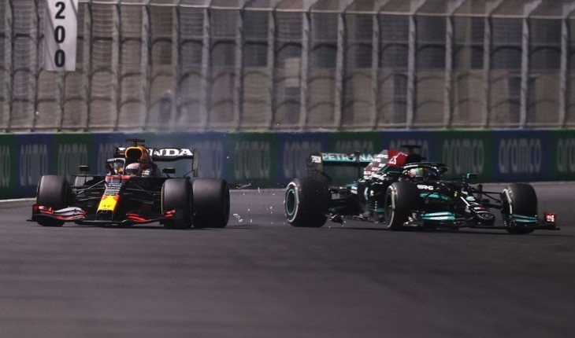

<!DOCTYPE html>
<html>
<head>
	
	<title>დავალება 2</title>
</head>
<body>

</body>
</html>


</body>
<link rel="stylesheet" type="text/css" href="formula.css">
<header>
<h1>ფორმულა 1 | გიჟური რბოლა არაბეთში- 
ჩემპიონს ბოლო ეტაპი გამოავლენს</h1>
</header>


<p>ფორმულა 1-ის მიმდინარე სეზონს საოცარი დასასრული ექნება. ეს მას მერე გახდა ცნობილი, რაც საუდის არაბეთის ქალაქ ჯედაში გამართული ბოლოსწინა ეტაპი ბრიტანელმა ლუის ჰემილტონმა მოიგო და საერთო ჩათვლაში ნიდერლანდელ მაქს ფერსტაპენს გაუთანაბრდა.</p>

<p>არაბული რბოლა გიჟური გამოდგა, ალბათ, წლის ერთ-ერთი საუკეთესო, რომელიც ფორმულა 1-ის ქომაგებს დიდი ხანი ემახსოვრებათ.
</p>
<p>რბოლა წითელი დროშების გამო 2-ჯერ შეწყდა და ამან დამატებითი ინტრიგა მოიტანა. პირველ შემთხვევაში ავარია მიკ შუმახერს შეემთხვა, შემდეგ კი, სერხიო პერესის, შარლ ლეკლერის, ჯორჯ რასელისა და ნიკიტა მაზეპინის ჯერი დადგა.</p>
<p>პირველ შემთხვევაში, ფერსტაპენმა იხეირა და წინ გაიჭრა, თუმცა, ლიდერობა მალევე დათმო. მეორე შემთხვევაშიც, მაქსს უფრო მსუბუქი საბურავები ეყენა და მესამედან პირველ ადგილზე გადაინაცვლა, მაგრამ ფინიშამდე მაინც ვერ გაძლო – მას ჰემილტონი დაეწია.</p></section>

	
<p>ბრიტანელი აშკარად უკეთ გამოიყურებოდა, თუმცა, გადასწრების მცდელობისას ნიდერლანდელმა ტრასა მოჭრა, მას პოზიციის დაბრუნება ურჩიეს, თუმცა, ესეც ცუდად გამოუვიდა და ბოლიდებს შორის კონტაქტი დაფიქსირდა.</p>
<p>მეორე ცდაზე ჰემილტონმა გასწრება მოახერხა, ფერსტაპენმა მყისიერი კონტრიერიში სცადა, თუმცა, წესები ისევ დაარღვია და 5-წამიანი ჯარიმა მიიღო. ამან მაქსი საბოლოოდ დააშოშმინა, ჰემილტონმა კი უპირატესობა იგრძნო და ფინიშამდე საუკეთესო წრეც კი გაიარა.</p>

<p><em><span>“ძალიან მძიმე რბოლა იყო. მაქსიმალურად ჭკვიანურად მოქმედებას ვცდილობდი და მთელი გამოცდილება გამოვიყენე: მთავარი იყო მანქანა ტრასაზე შემენარჩუნებინა. ვამაყობ ჩემი გუნდით, რომელმაც ასეთი მანქანა მომიმზადა. მართალი გითხრათ, ვერ გავიგე, იმ მომენტში მაქსმა მუხრუჭი რატომ გამოიყენა. შედეგად, დავეჯახე, მერე კი, უბრალოდ გზა განვაგრძე. უცნაური სიტუაცია იყო”, - განაცხადა ტრიუმფატორმა.</span></em></p>

<p>ამგვარად, მიმდინარე სეზონის დაკვნითი ეტაპის წინ უაღრესად საინტერესო ვითარება შეიქმნა: ლიდერებს – ფერსტაპენსა და ჰემილტონს აქტივში 369.5-369.5 ქულა აქვთ და ჩემპიონის ვინაობას არაბეთის გაერთიანებულ საამიროებში გამოავლენენ. აბუ დაბის გრან პრი 10-12 დეკემბერს გაიმართება.</p>
<a href="https://twitter.com/F1/status/1467581103317954560?ref_src=twsrc%5Etfw%7Ctwcamp%5Etweetembed%7Ctwterm%5E1467581103317954560%7Ctwgr%5E%7Ctwcon%5Es1_&ref_url=https%3A%2F%2Fpopsport.com%2Farticle%2F40398-pormula-1-gizhuri-rbola-arabetshi-chempions-bolo-etapi-gamoavlens">ONE RACE TO GO. ZERO POINTS IN IT.

Who wins?!</a>
<p><strong>საერთო ჩათვლა ბოლო რბოლის წინ</strong></p>
<ul>
	<li class="large-text">1. მაქს ფერსტაპენი (რედ ბული) - 369,5 ქულა
	<li class="large-text">2. ლუის ჰემილტონი (მერსედესი) - 369,5
	<li class="large-text">3. ვალტერი ბოტასი (მერსედესი) - 218
	<li class="large-text">4. სერხიო პერესი (რედ ბული) - 190
	<li class="large-text">5. შარლ ლეკლერი (ფერარი) - 158
	<li class="large-text">6. ლანდო ნორისი (მაკლარენი) - 154
	<li class="large-text">7. კარლოს საინსი (ფერარი) - 149,5
	<li class="large-text">8. დანიელ რიკარდო (მაკლარენი) - 115
	<li class="large-text">9. პიერ გასლი (ალფა ტაური) - 100
	<li class="large-text">10. ფერნანდო ალონსო (ალპინი) - 77
</ul>

<p><strong>კონსტრუქტორთა თასი</strong></p>
<ul>
	<li class="large-text">1. მერსედესი - 587,5
<li class="large-text">2. რედ ბული -  559,5
<li class="large-text">3. ფერარი - 307,5
<li class="large-text">4. მაკლარენი - 269
<li class="large-text">5. ალპინი - 149
<li class="large-text">6. ალფა ტაური - 120
<li class="large-text">7. ასტონ მარტინი - 77
<li class="large-text">8. უილიამსი - 23
<li class="large-text">9. ალფა რომეო - 13
<li class="large-text">10. ჰაასი - 0
<ul>
<br>
<br>


<footer><strong> <a target=”_blank” href="https://popsport.com/">POPSPORT.GE</a>

Copyright © 2021 popsport — ყველა უფლება დაცულია


</strong></footer>

</ul>
</body>


</html>


